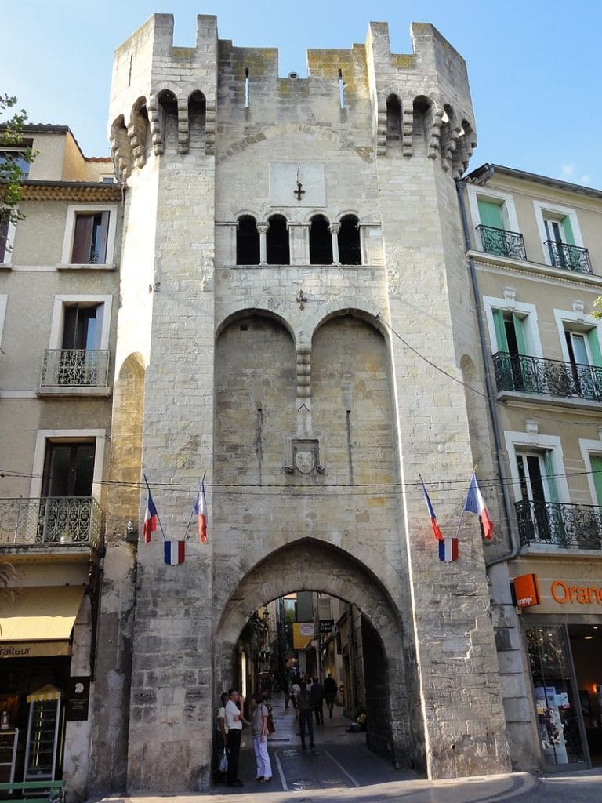

<!--Main layout-->
<main class="vennbahngrijs">
    <div class="container">

        <div class="row">
            <div class="col-md-12 pt-5">
                <h2>Orange - Manosque</h2>
                <h5>Etappe 10 - 120 KM</h5>
            </div>
        </div>

        <div class="row">
            <div class="col-md-6">
                <div class="row">
                    <div class="col-md-12 pt-5">
                      <h4>De route</h4>
                      Deze route gaat van Orange naar Manosque.
                      Het begin van de route is helaas onduidelijk. In Orange heb je een heleboel borden met aangegeven fietspaden waar ze
                      helaas toch niet zijn.
                      Je moet Orange verlaten via het Zuid-Oosten. Hier ligt een prachtig fietspad tot aan Carpentas maar
                      het eindigt helaas abrupt. <br><br>

                      Je moet verder via
                      het drukke centrum van Carpentas over landweggetjes naar L'Isle-sur-la-Sorgue. Daar kom je weer op een goed
                      fietspad dat gaat naar Apt. Het fietspad eindigt daar.
                      <br><br>

                      Je kunt hier een keuze maken tussen of de weg met vaak snelrijdend autoverkeer of de
                      meer rustige fietsroute door de bergen. Ik nam de fietsroute door de bergen maar achteraf weet ik niet
                      of ik de juiste keuze heb gemaakt. <br><br>

                      Beide routes komen aan in Céreste. Na Céreste is er nog een klein stukje fietspad.
                      Na dit fietspad moet je over drukke weg door de heuvels naar Manosque fietsen. <br><br>

                      Je kunt er echter ook weer voor kiezen om noordelijk meer bergachtig te fietsen. Ik koos hiervoor wat na een stevige klim
                      een rustige afdaling naar Manosque opleverde. <br><br>

                      De laatste 30 kilometer van deze route is dus pittig.


                    </div>
                </div>
            </div>
            <div class="col-md-6 pt-5">
                    
            </div>
        </div>

        <div class="row">
            <div class="col-md-12 pt-5">
               <h4>Waar moet je op letten</h4>

               Toen ik in Manosque was aangekomen was mijn telefoon leeg en daar stond het adres van het hotel in.
               Daarom besloot ik om de telefoonwinkel (rechts in de foto)
               in te lopen en te vragen of ik mijn telefoon mocht opladen.
             <br> <br>

               Conclusie: Het is handig om het laatste stukje route naar een hotel op papier mee te nemen.

            </div>

        </div>


        <iframe src="https://www.google.com/maps/embed?pb=!1m28!1m12!1m3!1d71446.96125592505!2d5.009537658933431!3d44.048963764199385!2m3!1f0!2f0!3f0!3m2!1i1024!2i768!4f13.1!4m13!3e1!4m5!1s0x12b590b375eebce1%3A0xad1d8ad5844581fa!2sOrange%2C%20Frankrijk!3m2!1d44.138098899999996!2d4.807511!4m5!1s0x12cbcdb3ba6c6b09%3A0x1bd50854176f8011!2sManosque%2C%20Frankrijk!3m2!1d43.835744!2d5.790916!5e0!3m2!1snl!2snl!4v1663327228776!5m2!1snl!2snl"
        class="mt-5 mb-5" width="100%" height="600px" allowfullscreen="" loading="lazy" referrerpolicy="no-referrer-when-downgrade">
       </iframe>

    </div>
  </main>


